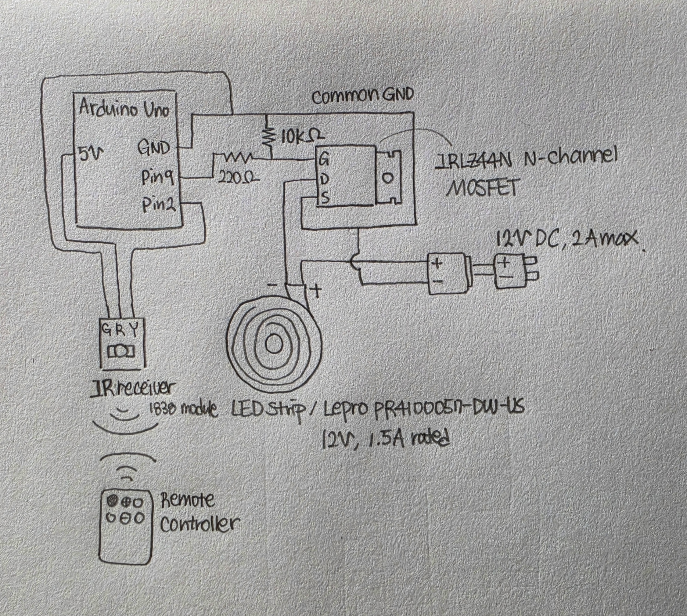
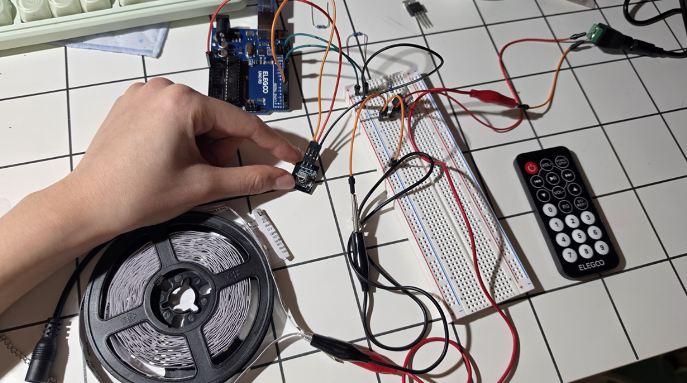
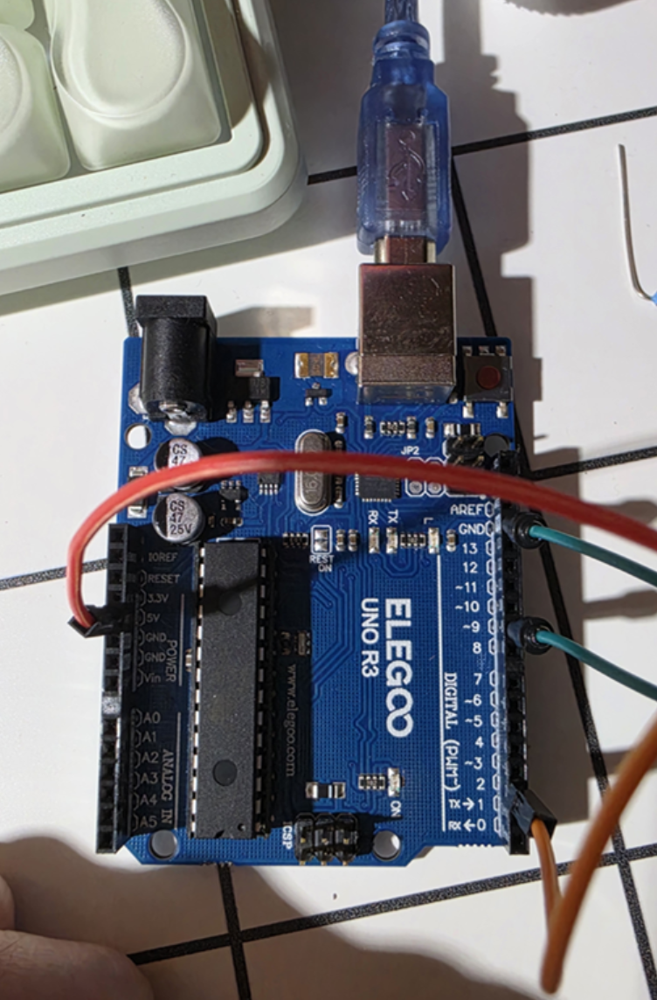
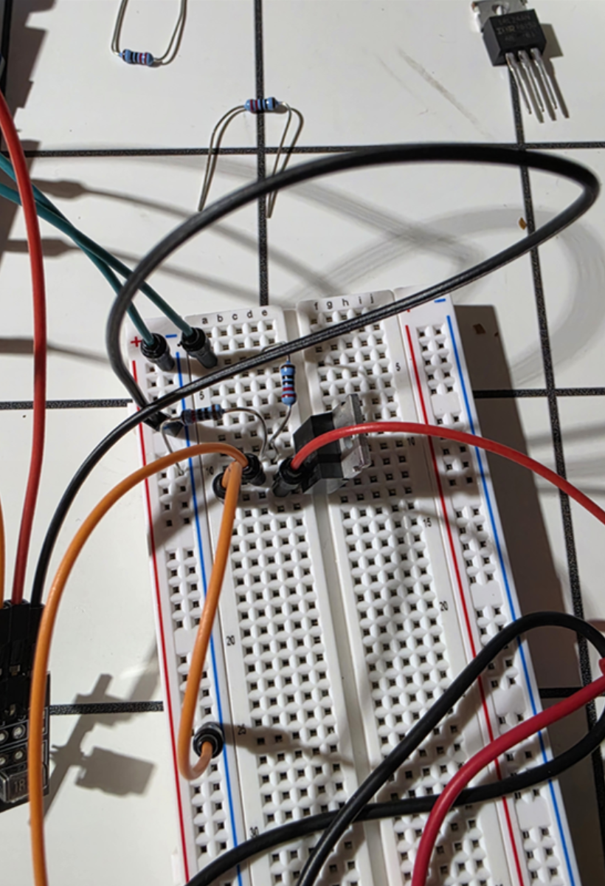
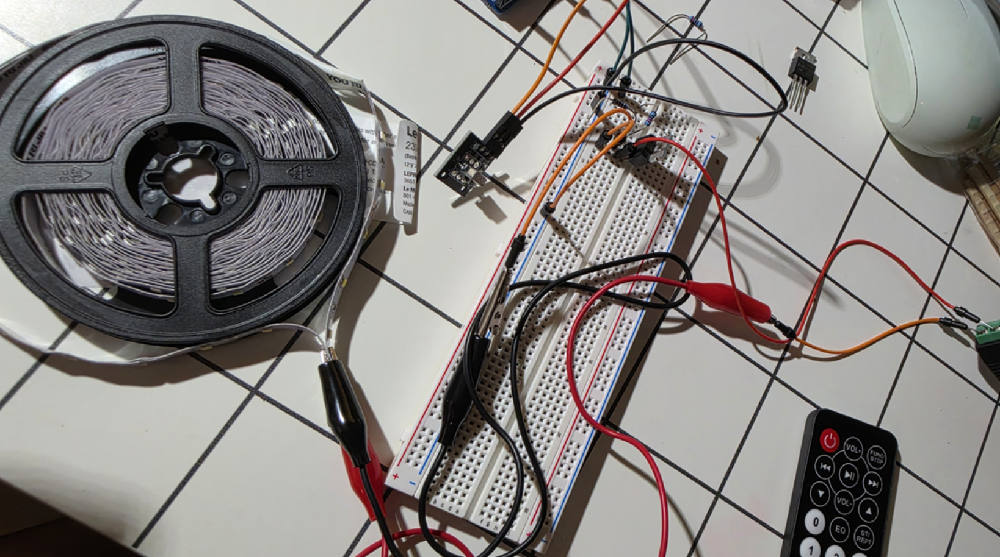
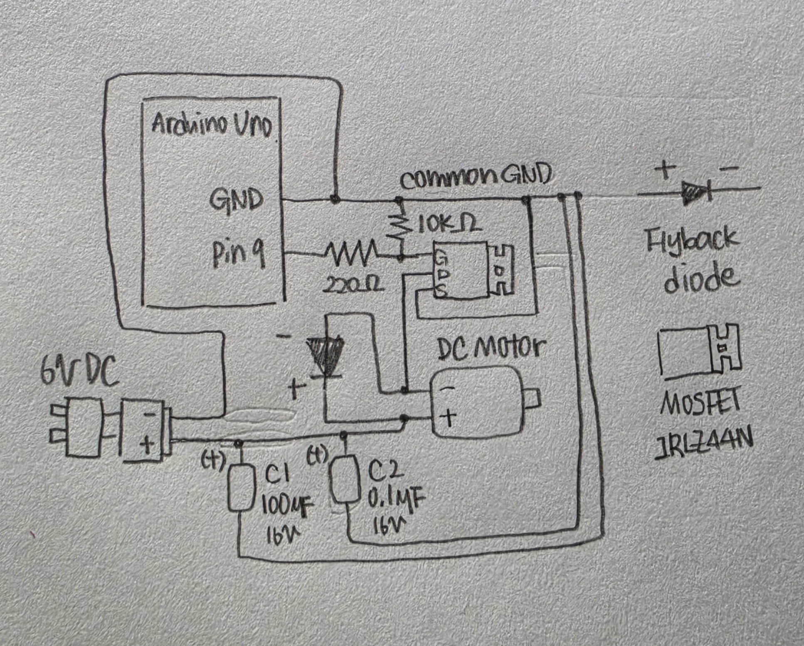
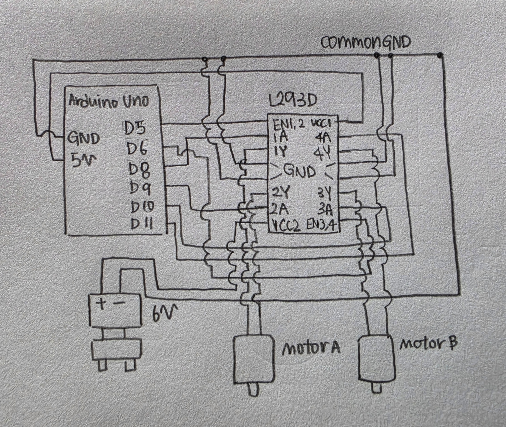

HCDE 439 - Physical Computing | Bomyung Lee | 11.09.26
Building an IR-Controlled LED Strip to Understand a Previously Challenging Circuit
For this assignment, I chose to revisit a circuit that I had struggled with during an earlier class exercise. When I first connected an LED strip to a MOSFET, I found the wiring very difficult. Although I eventually got it working, I did not fully understand why each connection was necessary. I felt that I had moved on without learning as much as I wanted.
Instead of choosing a completely new output device, I rebuilt the MOSFET-controlled LED strip and added an infrared receiver and remote controller. I wanted to understand how a low-power Arduino signal can control a higher-current load using a separate power supply. I also wanted to explore more functions than simply turning the strip on and off.
The completed controller responds to four remote commands: POWER toggles the lights, VOL+ and VOL- change manual brightness, and FUNC/STOP switches between manual brightness and automatic fading. I tested these functions on my assembled circuit.
| Remote Button | Decoded Command | Behavior |
|---|---|---|
| POWER | 0x45 | Turn the lighting system on or off. |
| VOL+ | 0x46 | Increase manual brightness by 25 (maximum 255). |
| VOL- | 0x15 | Decrease manual brightness by 25 (minimum 0). |
| FUNC/STOP | 0x47 | Toggle automatic fading and manual brightness. |

I used an IRLZ44N N-channel MOSFET as a low-side switch. The LED strip's positive terminal connects to the external 12V supply. Its negative terminal connects to the MOSFET drain (pin 2), and the MOSFET source (pin 3) connects to the supply's negative terminal. Arduino D9 controls the gate (pin 1) through a 220-ohm resistor. A 10-kilohm pull-down resistor connects the gate to ground.
The IR receiver has G, R and Y connections for ground, 5V power and signal. The signal connects to Arduino D2. The Arduino ground and the external supply negative terminal share a common ground so the gate-to-source voltage has a defined reference.
| Component / Node | Connection | Reason |
|---|---|---|
| IR receiver Y / R / G | Arduino D2 / 5V / GND | Receive and decode remote commands using IRremote. |
| Arduino D9 | 220 ohms to IRLZ44N Gate | Limit transient gate charging current. |
| 10-kilohm resistor | Gate to common GND | Keep the MOSFET off when the gate is not driven. |
| IRLZ44N Drain | LED strip negative | Switch the return current of the LED strip. |
| IRLZ44N Source | Common GND | Return load current to the external supply. |
| 12V supply positive | LED strip positive | Provide the load voltage independently of Arduino I/O. |
| 12V supply negative | Common GND, including Arduino GND | Complete the load path and share a control reference. |
These calculations use component labels and idealized assumptions, so the LED strip current below is a manufacturer-rated value, not a measurement.
I used the complete Lepro PR4100057-DW-US LED strip. Its packaging lists 12V DC, 1.5A and 16W. The external supply is rated at 12V and 2A.
Supply rated power capacity:
P = V x I = 12V x 2A = 24W
Supply current capacity margin:
2.0A - 1.5A = 0.5A
Voltage times the labeled current:
12V x 1.5A = 18W
The 18W calculation does not match the separate 16W packaging label. I report both without claiming they are identical measurements. If 16W represented actual input power at exactly 12V, the corresponding current would be 16W / 12V = 1.33A. I used 1.5A as the conservative labeled load-current comparison.
The MOSFET gate behaves mainly as a capacitive input. A series resistor helps limit the short charging and discharging current pulses from the Arduino pin. For an ideal 5V output and an initially discharged gate:
I(initial) approximately = 5V / 220 ohms = 0.0227A = 22.7mA
This is an idealized upper estimate for the initial charging current, not the LED strip current and not a continuous MOSFET gate current. The actual transient also depends on the Arduino output impedance and gate capacitance.
The 10-kilohm resistor gives the gate a defined LOW level when the Arduino pin is in its default high-impedance input state during reset. When D9 is driven HIGH, the 220-ohm and 10-kilohm resistors form a voltage divider. Assuming an ideal 5V Arduino output:
I = 5V / (220 + 10000) ohms = 0.000489A = 0.489mA
V(GS) = 5V x 10000 / 10220 approximately 4.89V
Voltage across 220 ohms:
0.000489A x 220 ohms approximately 0.108V.
Voltage across 10 kilohms:
0.000489A x 10000 ohms approximately 4.89V.
Pull-down resistor power:
(4.89V)^2 / 10000 ohms approximately 0.00239W.
A 10-kilohm resistor provides a defined gate voltage without drawing much current during normal HIGH output. A standard 0.25W resistor is more than sufficient for the calculated steady-state dissipation.
| Location | OFF state (approx.) | ON state (approx.) |
|---|---|---|
| External supply | 12V | 12V |
| IR receiver power | 5V | 5V |
| MOSFET source relative to common GND | 0V | Near 0V |
| Gate-to-source voltage | Near 0V | Approximately 4.89V |
| MOSFET drain-to-source voltage | Near 12V, depending on the LED strip circuit | Small voltage drop if sufficiently enhanced |
| LED strip voltage | Near 0V | Near 12V minus MOSFET and wiring drops |
| LED strip current | Near 0A | Up to labeled 1.5A design reference; not measured |
| Gate pull-down path | Near 0mA | Approximately 0.489mA |
The MOSFET is switched using PWM, so the ON and OFF conditions alternate rapidly at intermediate brightness values. A multimeter could be used in future testing to measure current and voltage rather than relying only on the expected values.
The IRLZ44N datasheet lists a maximum continuous drain current of 47A at a case temperature of 25 degrees C and V(GS) = 10V, and 33A at a case temperature of 100 degrees C under its specified conditions. Its pulsed drain-current rating is 160A. These are absolute maximum ratings, not guarantees for an uncooled breadboard assembly.
The labeled 1.5A LED strip current is much lower than the 47A datasheet number. However, my circuit uses approximately 4.89V gate drive rather than 10V, and safe current also depends on the MOSFET's on-resistance, thermal conditions and connections. MOSFET conduction heating follows P = I^2 x R(DS(on)). Without verifying the exact resistance at my operating gate voltage and temperature, I cannot claim a measured power loss or a proven safe continuous current.
Arduino Uno D9 supports PWM through analogWrite(). A value of 0 commands fully OFF, while 255 commands fully ON. Intermediate values vary the ON fraction of each switching cycle rather than supplying a steady intermediate analog voltage.
Default manual duty cycle: 150 / 255 x 100% approximately 58.8%
This percentage describes the commanded PWM duty cycle, not a measured percentage of perceived brightness. Each VOL+ or VOL- press changes the manual PWM value by 25. During auto mode, the program changes brightness by one count approximately every 8ms, producing a nominal 0-to-255 ramp time of 255 x 8ms = 2040ms.
I used alligator clips for most of the 12V load wiring. The 12V negative return connects through a jumper wire and a breadboard row shared with the MOSFET source. That path may carry the full LED strip current. I did not verify the current ratings of the jumper, breadboard contacts or clips, so I cannot establish that this assembly is suitable for prolonged operation. A future version should use appropriately rated wires and connectors for the high-current path.
I assembled the circuit using an Arduino Uno, an IR receiver, an IRLZ44N MOSFET, a breadboard, resistors, jumper wires, alligator clips, the complete LED strip, and a separate 12V supply. The Arduino was powered by USB during testing.




The program uses the Arduino-IRremote library to decode infrared signals and analogWrite() to control the MOSFET. The four button command values were identified through testing with my remote. Repeated held-button frames are ignored. The automatic fade uses millis() rather than delay(), so remote input can still be checked while brightness changes.
At reset, Arduino Uno I/O pins normally begin as inputs with high impedance. Before calling pinMode(D9, OUTPUT), my code calls digitalWrite(D9, LOW) to set the output latch LOW. When D9 becomes an output, it drives LOW; analogWrite(D9, 0) then keeps the strip off. The external 10-kilohm resistor helps hold the MOSFET gate LOW while D9 is not actively driven.
// Include the IRremote library for decoding infrared signals.
#include <IRremote.hpp>
// Assign Arduino D2 to the IR receiver signal.
const int IR_PIN = 2;
// Assign Arduino PWM pin D9 to the MOSFET gate.
const int LED_PIN = 9;
// Store the measured POWER button command.
const uint8_t CMD_POWER = 0x45;
// Store the measured VOL+ button command.
const uint8_t CMD_UP = 0x46;
// Store the measured VOL- button command.
const uint8_t CMD_DOWN = 0x15;
// Store the measured FUNC/STOP button command.
const uint8_t CMD_MODE = 0x47;
// Set the default manual brightness.
int manualBrightness = 150;
// Store the current PWM brightness.
int currentBrightness = 0;
// Track whether the lighting system is on.
bool isOn = false;
// Track whether automatic fading is enabled.
bool isAutoMode = false;
// Store the direction of the fade.
int fadeDirection = 1;
// Store the time of the previous fade update.
unsigned long previousFadeTime = 0;
// Set the time between fade steps in milliseconds.
const unsigned long FADE_INTERVAL = 8;
// Set the brightness change for each remote press.
const int BRIGHTNESS_STEP = 25;
// Initialize the Arduino and IR receiver.
void setup() {
// Set the D9 output latch LOW before enabling output.
digitalWrite(LED_PIN, LOW);
// Configure D9 as an output pin.
pinMode(LED_PIN, OUTPUT);
// Initialize the LED strip in the OFF state.
analogWrite(LED_PIN, 0);
// Start serial communication for debugging.
Serial.begin(9600);
// Initialize the infrared receiver on D2.
IrReceiver.begin(IR_PIN, ENABLE_LED_FEEDBACK);
// Print a message when the controller is ready.
Serial.println("Interactive Light Controller Ready!");
}
// Main loop to check for IR signals and update fading.
void loop() {
// Check whether the IR receiver has decoded a signal.
if (IrReceiver.decode()) {
// Ignore repeat frames from a held button.
if (!(IrReceiver.decodedIRData.flags & IRDATA_FLAGS_IS_REPEAT)) {
// Store the received command.
uint8_t command = IrReceiver.decodedIRData.command;
// Handle the received remote command.
handleRemote(command);
}
// Prepare the receiver for the next IR signal.
IrReceiver.resume();
}
// Update the automatic fade without blocking input.
updateFade();
}
// Handle a received remote command.
void handleRemote(uint8_t command) {
// Check whether the POWER button was pressed.
if (command == CMD_POWER) {
// Toggle the lighting system's power state.
isOn = !isOn;
// Check whether the system is now off.
if (!isOn) {
// Disable automatic fading.
isAutoMode = false;
// Set the current brightness to zero.
currentBrightness = 0;
// Turn the LED strip off.
analogWrite(LED_PIN, 0);
} else {
// Restore the saved manual brightness.
currentBrightness = manualBrightness;
// Apply the restored brightness.
analogWrite(LED_PIN, currentBrightness);
}
// Stop processing after handling POWER.
return;
}
// Ignore other commands while the system is off.
if (!isOn) {
// Return without changing the light.
return;
}
// Check whether the brightness-up button was pressed.
if (command == CMD_UP) {
// Switch to manual mode.
isAutoMode = false;
// Increase brightness without exceeding 255.
manualBrightness = constrain(manualBrightness + BRIGHTNESS_STEP, 0, 255);
// Update the current brightness.
currentBrightness = manualBrightness;
// Apply the new PWM brightness.
analogWrite(LED_PIN, currentBrightness);
}
// Check whether the brightness-down button was pressed.
else if (command == CMD_DOWN) {
// Switch to manual mode.
isAutoMode = false;
// Decrease brightness without going below zero.
manualBrightness = constrain(manualBrightness - BRIGHTNESS_STEP, 0, 255);
// Update the current brightness.
currentBrightness = manualBrightness;
// Apply the new PWM brightness.
analogWrite(LED_PIN, currentBrightness);
}
// Check whether the mode button was pressed.
else if (command == CMD_MODE) {
// Toggle between manual and automatic modes.
isAutoMode = !isAutoMode;
// Check whether automatic fading was enabled.
if (isAutoMode) {
// Begin fading from the current brightness.
currentBrightness = manualBrightness;
// Start by increasing brightness.
fadeDirection = 1;
// Reverse direction if already at maximum brightness.
if (currentBrightness >= 255) {
// Begin decreasing brightness instead.
fadeDirection = -1;
}
// Record the starting time for the fade.
previousFadeTime = millis();
} else {
// Restore the saved manual brightness.
currentBrightness = manualBrightness;
// Apply the restored manual brightness.
analogWrite(LED_PIN, currentBrightness);
}
}
}
// Update the PWM brightness for automatic fading.
void updateFade() {
// Continue only when power and auto mode are enabled.
if (isOn && isAutoMode) {
// Read the current Arduino uptime.
unsigned long currentTime = millis();
// Check whether enough time has passed for a fade step.
if (currentTime - previousFadeTime >= FADE_INTERVAL) {
// Save the time of this fade update.
previousFadeTime = currentTime;
// Increase or decrease brightness by one step.
currentBrightness += fadeDirection;
// Check whether maximum brightness was reached.
if (currentBrightness >= 255) {
// Limit the brightness to 255.
currentBrightness = 255;
// Reverse the fade toward lower brightness.
fadeDirection = -1;
}
// Check whether minimum brightness was reached.
else if (currentBrightness <= 0) {
// Limit the brightness to zero.
currentBrightness = 0;
// Reverse the fade toward higher brightness.
fadeDirection = 1;
}
// Apply the updated PWM brightness.
analogWrite(LED_PIN, currentBrightness);
}
}
}
POWER toggles the system's power state and restores the saved manual brightness when turning on. VOL+ and VOL- change manualBrightness by 25 and exit automatic mode. FUNC/STOP toggles automatic fading. updateFade() changes the PWM value by one count after each nominal 8ms interval and reverses direction at 0 and 255. The loop keeps checking remote input instead of waiting in a blocking delay.
The Arduino-IRremote library is third-party software. Its repository and the official Arduino reference are listed in the References section.

I tested the four remote functions on the assembled circuit and recorded their operation. The demonstration shows how the input receiver, Arduino code and MOSFET work together to control an externally powered LED strip.
I used the IRLZ44N N-channel MOSFET. Pin 2 is Drain and pin 3 is Source. The Infineon datasheet gives a maximum continuous drain current of 47A at a case temperature of 25 degrees C and V(GS) = 10V. It also lists 33A at a case temperature of 100 degrees C and 160A as the pulsed drain-current limit.
My LED strip is labeled 1.5A, which is below 47A, but the absolute maximum rating is conditional. The approximately 4.89V gate voltage, heat dissipation, and breadboard wiring mean that 47A cannot be treated as a safe current for my physical setup.
Source: Infineon IRLZ44N datasheet, Absolute Maximum Ratings (page 1).

In this proposed circuit, Arduino D9 connects through 220 ohms to the IRLZ44N gate, with a 10-kilohm gate-to-ground pull-down. The motor is connected between the external 6V positive terminal and the MOSFET drain; the MOSFET source and external supply negative share ground with the Arduino.
A flyback diode connects directly across the motor: its cathode (striped end) goes to Motor + / 6V+, and its anode goes to Motor - / MOSFET Drain. When the MOSFET turns off, the diode provides a path for inductive current and helps suppress the voltage spike. A 100-microfarad polarized electrolytic capacitor (positive to 6V+) and a 0.1-microfarad ceramic capacitor are connected in parallel between 6V+ and common GND.
The larger capacitor helps buffer slower supply variations, while the smaller ceramic capacitor helps with higher-frequency noise. Both should have a voltage rating greater than 6V; 16V versions would provide margin.
I selected specific components for this proposed motor circuit and checked their specifications using manufacturer documentation.
| Component | Selected Part | Specifications and Datasheet |
|---|---|---|
| Arduino Uno | Arduino Uno R3 | 5V logic controller. Official Documentation |
| MOSFET | Infineon IRLZ44N | N-channel MOSFET used as a low-side switch. Official Datasheet |
| Flyback Diode | 1N5819 Schottky Diode | 1A average forward current rating. Manufacturer Datasheet |
| DC Motor | Pololu #1100 5:1 Micro Metal Gearmotor LP 6V | Rated voltage: 6V. Typical no-load current: 50mA. Estimated stall current: 360mA. Motor Datasheet |
| C1 | Panasonic EEUFR1C101 | 100uF, 16V polarized electrolytic capacitor. Manufacturer Specifications and Datasheet |
| C2 | Murata GRM188R71C104KA01 | 0.1uF, 16V ceramic capacitor. Manufacturer Specification Sheet |
I selected a low-power 6V DC gearmotor because its estimated stall current is approximately 0.36A. This is below the selected 1N5819 diode's 1A average forward current rating, although actual flyback protection also depends on pulse duration and thermal limits.
The 100uF electrolytic capacitor and 0.1uF ceramic capacitor are both rated for 16V, which is higher than the proposed 6V supply. The electrolytic capacitor must be connected with the correct polarity.
This circuit is a proposed design for Q2. I did not physically build or measure this motor circuit.

The L293D contains two H-bridge driver channels. Arduino digital outputs set the input combinations, allowing both motors to turn in either direction. Pin 16 (VCC1) connects to Arduino 5V for logic, while pin 8 (VCC2) connects to the external 6V motor supply. Pins 4, 5, 12 and 13 connect to common ground with Arduino GND and the supply negative terminal.
Motor A connects between L293D pins 3 and 6, while Motor B connects between pins 11 and 14. L293D includes output clamp diodes for inductive loads. Each motor's required current must be checked against the chip's channel rating before building.
| Arduino | L293D | Purpose |
|---|---|---|
| D5 | Pin 1 (EN1,2) | Enable Motor A |
| D8 | Pin 2 (1A) | Motor A input 1 |
| D9 | Pin 7 (2A) | Motor A input 2 |
| D6 | Pin 9 (EN3,4) | Enable Motor B |
| D10 | Pin 10 (3A) | Motor B input 1 |
| D11 | Pin 15 (4A) | Motor B input 2 |
| 5V | Pin 16 (VCC1) | Logic power |
| External 6V+ | Pin 8 (VCC2) | Motor power |
| Common GND | Pins 4, 5, 12, 13 | Shared ground |
| Step | A1 / A2 | B1 / B2 | Motor Directions |
|---|---|---|---|
| 1 | HIGH / LOW | HIGH / LOW | Both forward |
| 2 | LOW / HIGH | LOW / HIGH | Both backward |
| 3 | HIGH / LOW | LOW / HIGH | A forward, B backward |
| 4 | LOW / HIGH | HIGH / LOW | A backward, B forward |
The following is illustrative pseudocode in Arduino syntax. It assumes both enable pins are HIGH. The labels forward and backward depend on how the motor terminals are connected. For a physical build, I would add a short stop interval before reversing a moving motor.
// Assign the two motor enable pins.
const int EN_A = 5;
// Assign the two motor enable pins.
const int EN_B = 6;
// Assign the two direction inputs for Motor A.
const int A1 = 8;
// Assign the two direction inputs for Motor A.
const int A2 = 9;
// Assign the two direction inputs for Motor B.
const int B1 = 10;
// Assign the two direction inputs for Motor B.
const int B2 = 11;
// Configure motor control pins as outputs.
void setup() {
// Configure Motor A enable.
pinMode(EN_A, OUTPUT);
// Configure Motor B enable.
pinMode(EN_B, OUTPUT);
// Configure Motor A direction input 1.
pinMode(A1, OUTPUT);
// Configure Motor A direction input 2.
pinMode(A2, OUTPUT);
// Configure Motor B direction input 1.
pinMode(B1, OUTPUT);
// Configure Motor B direction input 2.
pinMode(B2, OUTPUT);
// Enable Motor A at full speed.
digitalWrite(EN_A, HIGH);
// Enable Motor B at full speed.
digitalWrite(EN_B, HIGH);
}
// Repeatedly demonstrate four direction combinations.
void loop() {
// Both forward: A1=HIGH, A2=LOW.
digitalWrite(A1, HIGH);
// Complete Motor A forward direction.
digitalWrite(A2, LOW);
// Set Motor B forward direction.
digitalWrite(B1, HIGH);
// Complete Motor B forward direction.
digitalWrite(B2, LOW);
// Hold the first combination for two seconds.
delay(2000);
// Both backward: reverse Motor A first input.
digitalWrite(A1, LOW);
// Reverse Motor A second input.
digitalWrite(A2, HIGH);
// Reverse Motor B first input.
digitalWrite(B1, LOW);
// Reverse Motor B second input.
digitalWrite(B2, HIGH);
// Hold the second combination for two seconds.
delay(2000);
// Set Motor A forward input 1.
digitalWrite(A1, HIGH);
// Set Motor A forward input 2.
digitalWrite(A2, LOW);
// Set Motor B backward input 1.
digitalWrite(B1, LOW);
// Set Motor B backward input 2.
digitalWrite(B2, HIGH);
// Hold the third combination for two seconds.
delay(2000);
// Set Motor A backward input 1.
digitalWrite(A1, LOW);
// Set Motor A backward input 2.
digitalWrite(A2, HIGH);
// Set Motor B forward input 1.
digitalWrite(B1, HIGH);
// Set Motor B forward input 2.
digitalWrite(B2, LOW);
// Hold the fourth combination for two seconds.
delay(2000);
}
Yes. I used ChatGPT as a learning, programming and explanation assistant throughout this assignment. I asked it to explain the MOSFET gate, drain and source connections, common ground, gate and pull-down resistor values, and the separation between Arduino logic power and the 12V LED load.
I also used ChatGPT to help develop and troubleshoot the IRremote-based firmware. I tested my actual remote to identify its command codes, checked each function on the physical circuit, and recorded the result. I also asked questions about PWM, electrical calculations, and the motor circuit examples. ChatGPT helped me review and explain these concepts, including parts of my written explanations.
I selected the project direction, assembled and tested the physical circuit, identified the remote commands, drew the schematics, took the photographs and recorded the demonstration. AI explanations were not always sufficient on their own. I asked follow-up questions and corrected misunderstandings, particularly about flyback diode direction and common ground.
I found AI most useful when I used it to ask questions instead of simply copying an answer. Revisiting this circuit gave me a second opportunity to understand something I had previously completed without feeling confident about it. I also learned that AI suggestions must be checked against component datasheets, actual behavior and assignment instructions.
This project was meaningful to me because it revisited a circuit I had found genuinely difficult. In the earlier exercise, I was mostly trying to get the LED strip to turn on. This time, I paid closer attention to why the MOSFET is necessary, how its gate is controlled, why the Arduino and external supply share ground, and why the LED strip cannot simply be powered from a digital output pin.
Adding remote commands and automatic fading also helped me see how the same hardware could support more interaction. Using millis() allowed the program to keep listening for input while changing brightness. I still want to improve my ability to measure current and verify wiring ratings, but I now understand the circuit much better than I did when I first built it.